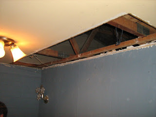

Así es, ya habrán leído el post anterior, si no lo han hecho léelo primero.
Ahora vamos a comenzar con las reparaciones, que en esta fase consisten en reemplazo de la plancha rota, para ello necesitamos:
- Una plancha de volcanita de un ancho/largo que cubra la falla o que reemplace en su totalidad la plancha rota. Debemos tener mucho cuidado en el grosor de la misma.
- Serrucho
-
Taladro
-
Tornillos para volcanita (unos negros con un hilo especial)
- Atornillador de cruz
- Martillo
- Guincha de medir
- Lápiz grafito n°2
Una vez que hayamos adquirido lo antes listado procedemos con:
-
Determinar los márgenes de la plancha dañada, luego de tener claro los márgenes procedemos a romper la pasta de muro que une esta plancha con la colindante, para ello usamos el filo del serrucho o la punta del atornillador.
-
Luego de eso sacamos los restos de la plancha rota y pasta de muro o yeso, esto se hace rompiendo aún más o sacando los clavos/tornillos que la sujeten (recomiendo la primera opción).
-
Limpiamos los bordes procurando dejar bordes lisos. Usamos en serrucho para gastar o el martillo para pedazos de yeso.
-
Medimos con cuidado.
-
Cortamos la plancha nueva para que calce. Debemos tener en mente que las planchas de volcanita vienen con un lado en que un borde es más delgado. Ese lado debe quedar hacia abajo y el borde junto a la plancha vecina más visible.
-
Calzamos la plancha, si no ajusta a la primera gastamos el borde que cortamos con el mismo serrucho.
-
Atornillamos por la parte angosta primero, luego en pares por los lados anchos. Usen una broca apta para los tornillos, si no la usan será difícil atornillar y podemos cortar el tornillo con el torque.
{kind=link}
{kind=link}
Luego veremos como empastar y dar los toques finales para esta restauración de emergencia